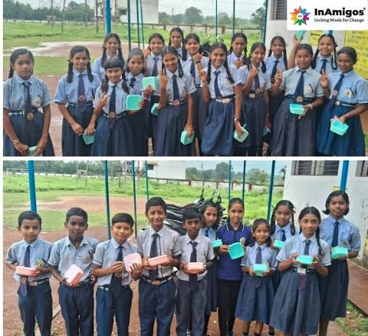
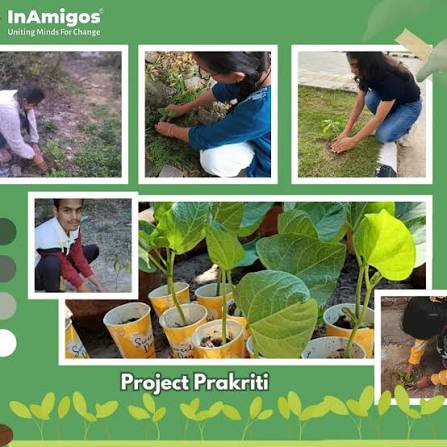
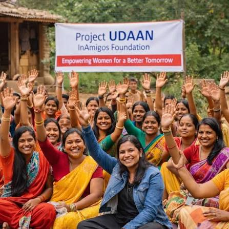
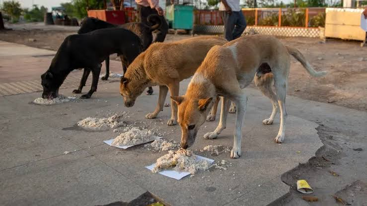
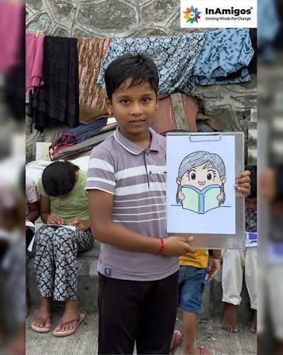

Moments In Action
Our Gallery






InAmigos Foundation works tirelessly across India to serve the underprivileged through feeding initiatives, quality education, women empowerment, animal welfare, and environmental sustainability.
Six focused programmatic branches serving communities across India.
Fostering basic human dignity by serving over 50,000+ nutritious meals and dry food packages along with winter clothing drives to local families in extreme poverty.
Nurturing young minds through fundamental learning support, digital literacy workshops, mentorship, and creative arts for marginalized school-age children.
Ensuring animal protection, rescue support, healthcare rehabilitation, and daily feeding runs for stray animals through our direct networks.
Soaring towards self-reliance by training women in handloom crafts, basic stitching, tailoring, and menstrual hygiene awareness in rural sectors.
Paving the path to sustainable ecological development by planting 20,000+ native saplings and initiating plastic-cleanup drives across neighborhoods.
Empowering the Indian youth and transitioning careers by delivering technical internships and professional developmental skills to 30,000+ interns.
Every single programmatic triumph we celebrate is built on the passion and execution of our volunteer networks. By choosing to donate your skills or time, you unlock:
Measurable social metrics compiled directly from audited foundation compliance reports.
Directly distributed under Project Seva to underserved regions.
Providing structural career development under Project Vikas.
Fostering clean community ecological zones under Project Prakriti.
Providing rescue, protection, and medical aid under Project Jeev.





Join InAmigos as a volunteer or partner today and help us create a better, more compassionate tomorrow.